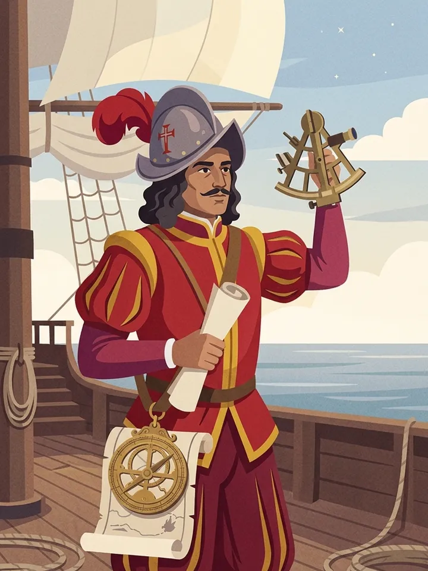
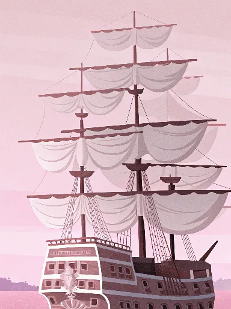
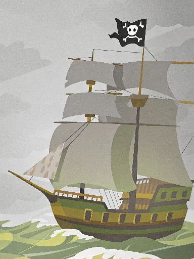
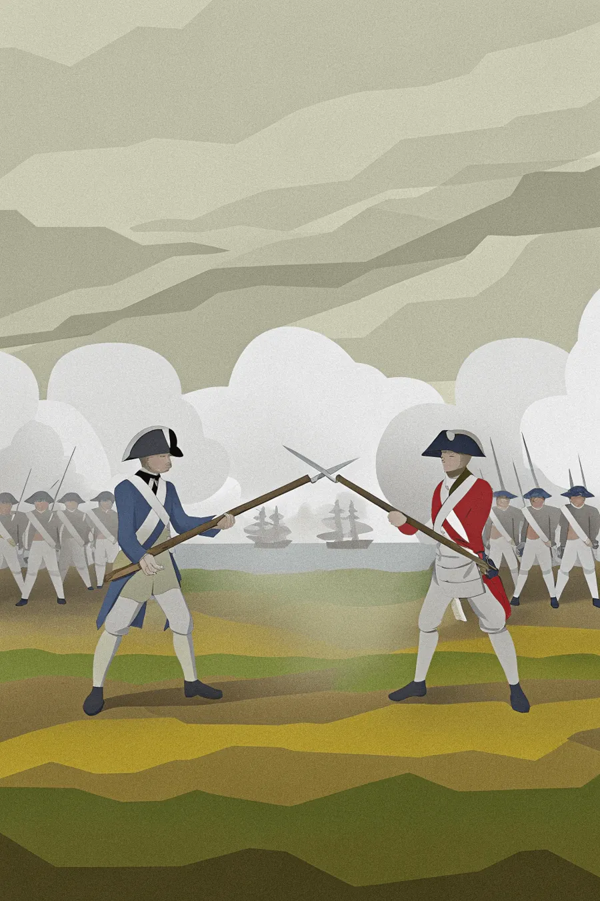
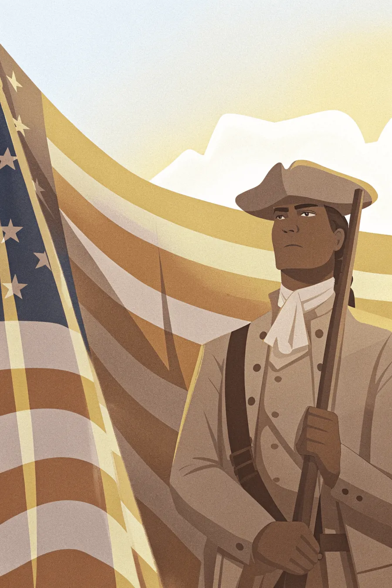

Colonization
A board game of the New World,
Contents
Components

The game in brief
You govern a European nation’s new colonies across the ocean. The Crown wants its taxes; your colonists want their freedom.
Over
The game ends with the War of Independence. The governor who rang the fewest bells of liberty sides with the King as the loyalist. Everyone else is a patriot and must hold their colonies against the Royal Army and the loyalist’s troops.
Keep at least one colony through the war and score the most victory points 🏅. A patriot scores well for every colony still held and every bell still unspent; the loyalist scores for every colony, including the ones taken in the war.
Agents are your actions
Everything you do, you do by playing an agent card from your hand: one card, one action. Any agent can take any of the standard actions, and most have a talent that makes one of them better. A fisherman catches more fish, a sailor sails further, a soldier fights harder. The same agents fight for you in battle and in the war.
Your agents form your own deck. You start with your nation’s
Two tokens on the map
You have one ship ⛵ and one pawn ♟️. The ship sails the ocean and carries your pawn and up to
Resources
Five kinds of resource, kept as cubes:
Resources are kept in one warehouse that serves all your colonies, and sold in Europe for gold. Crops 🌿 are cash crops and fur alike: one resource and one icon wherever they are gathered.
Three more things are counted with tokens:
- Gold 🟡 hires agents and pays the tax.
- Bells 🔔 measure the colonists’ wish for liberty. They win Founding Fathers, raise militia in the war and score points at the end.
- Crosses ✝️ recruit agents and convert natives. You may hold at most
.
Red cubes 🟥 are the Royal Army. They gather in the barracks on the Europe board through the game and march against the patriots in the war.

Setting up
How to lay out the table for the first round.
- The map. Shuffle the
map tiles face down. Lay of them in a square, by , face down, all with their arrow pointing north. Around the square runs a ring of open sea, and around that a ring of Europe cells. - Europe. Place the Europe board. Put the round marker on
, the tax marker on the first space, and a cube of each resource on its start price.
- The agent deck. Shuffle the common agents into one deck. Deal agents onto the pier until
different agents show; a repeat goes on top of its own stack and you keep dealing. - Natives. Put the
native agents in a pile of their own. Shuffle the tribe cards. - The salon. Shuffle the Founding Fathers and lay
of them face up. - Buildings. Sort the building cards into stacks:
of each basic building and one of each improvement. - Decks. Shuffle the events, the ruins, the wrecks and the King’s tactics into four face-down decks.
- Players. Each player chooses a nation and takes its board, ship, pawn, colony markers and starting agents, and shuffles the agents into their own deck. Everyone starts with no gold, bells, crosses or resources. For a first game, choose a nation with one ★: they are the easiest. Choose a first player at random; in turn order, each player puts their ship, with the pawn aboard, on a free Europe cell.
A round
Draw, then act in turn until everyone has passed. Then come the event and the tax.
1. Draw
Each player draws agents from their own deck until they hold
2. Actions
Starting with the first player and going clockwise, each player in turn plays one agent and takes one action with it. The agent then goes to its owner’s discard. There are no free actions: everything you do costs a card.
Turns go round the table until everyone has passed. When you pass, the round is over for you: keep any of your remaining cards for the next round and discard the rest. A player with no cards must pass.
Your warehouse never holds more than
3. Event
When everyone has passed, turn over the top event card and resolve it from top to bottom (see Chance and history).
4. Tax
From round
In round 4 the tax is
5. End of the round
If any player has
Playing a card
Any agent can take any standard action and adds its talent where it applies, except where an action asks for a certain agent: an attack needs an agent with 🗡️, an alliance one with 🎓, and work in a building enough education. The criminal and the slave may only produce or be retrained in a school; they still count 1 in battle as support, and may be discarded to pay a card cost or to exchange.
Your hand, deck and discard together are your agent pool. Some cards make you remove agents from it; removal stops when

Moving and exploring
Sail the coast, march inland, and turn the unknown map face up one tile at a time.
Move
Move your ship and your pawn, spending up to
- The ship stays on water; the pawn stays on land unless it is aboard.
- Only one token may stand on a cell, except your pawn aboard your ship.
- Your pawn may enter your own colony. No token may enter a settlement or another player’s colony.
Explore
For
Load and unload
When your ship is on water next to one of your colonies, moving resources between its hold and your warehouse costs
Land and embark
To land or board, the pawn simply moves into the target cell and pays its cost, like any move: the land cell when landing, the ship’s cell when boarding.
Clara’s ship, with her pawn aboard, sails 2 cells along the coast: 2 💨. She spends 1 💨 to land the pawn on a grassland cell, as grassland costs 1, and 1 💨 to march it one more grassland cell inland, then sails the ship on with her last point.
Ruins and wrecks
When your pawn enters a ruin, or your ship enters a wreck, remove its black cube and resolve the top card of that deck at once. If the card ends your move, the points you have left are lost, for both tokens.
Back to Europe
A token sent to Europe leaves the map:
- A ship goes to the nearest free Europe cell, with its pawn and, unless the card says otherwise, its cargo. A ship that takes damage, from any cause, is sent to Europe, or next to one of your colonies if you have a shipyard. A damaged ship cannot move or attack until it is repaired.
- A pawn waits in Europe until its ship picks it up, for 1 💨 from any Europe cell.

Colonies
Found up to
Found a colony
Your pawn founds a colony on the land cell it stands on: place one of your colony markers there. The first colony is free; each further one costs
- not touch another colony or a settlement, diagonals included;
- touch at least one ocean cell that connects to Europe through revealed water.
A settlement revealed later next to your colony is placed as usual: the distance rule only limits founding.
Colonies are never removed; only the war can take them. Your warehouse, buildings and Founding Fathers belong to you, not to one colony, and serve all your colonies.
Produce
Take 1 resource from one cell: your colony’s own cell, or one of its eight neighbours that is empty (no colony, settlement or token on it). Each terrain gives one thing; desert and tundra give nothing. Then add:
- +1 for a bonus symbol printed on that cell, if it shows that resource;
- +1 for the agent’s talent, if it matches;
- the bonuses of your Founding Fathers.
A bonus symbol on terrain that does not give its resource lets you take it there, 1 in all. A few agents, such as the trapper in the forest, can also produce where the land itself gives nothing.
Cells and buildings may be worked any number of times in a round.
Work in a building
Instead of a cell, the agent may work in one of your buildings, one building per action. The agent’s education must be at least the building’s. A workshop turns 1 🟩 into 1 🟧, a town hall makes 🔔, a chapel ✝️; the reference lists them all. Bonuses add to what a building makes, never to what it uses. One action works one building, so an improvement never adds to the output of its basic building; the basic building stays open to agents without the education for the improvement.
With docks, the agent works an ocean cell next to your colony through them for +1, so 2 🟦, before the cell’s bonus and the agent’s talent.
Daniel has docks, and his colony touches an ocean cell with a fish bonus. He plays his fisherman there: 1 for the sea, +1 for the docks, +1 for the bonus and +1 for the fisherman, 4 🟦 in all.
Build
Pay the building’s cost in timber 🟫 from your warehouse and put its card by your nation board. You may own up to
Supply
Spend 1 🟦 from your warehouse to draw 1 card. It replaces the agent you played: a way to swap a weak card, not to gain one.
Exchange
Discard 2 cards, the played one included, and draw 1.
Retrain
Play an agent you no longer need in your school to retrain it. It leaves your agent pool, and in its place you take any 📖 profession into your discard, from the agent deck, the common discard or the pier: your choice. If you search the agent deck, shuffle it after. The school takes any agent, a criminal or a slave too. A university takes agents with 📖 or more and retrains them into any 🎓 profession.
The agent you retrain leaves like any removed agent: a common one to the common discard, a native back to the native pile, a nation’s unique agent out of the game. Unique and native agents are never taught.
Hugo has a school and a criminal he cannot use. He plays the criminal in the school, takes a soldier from the agent deck into his discard, and the criminal goes to the common discard.
The custom house sells and the shipyard repairs: see Buildings in the reference.

Europe
The Old World buys your goods and sends you new people, and its salons are full of ideas.
These actions need your ship on a Europe cell. Tokens in Europe cannot be attacked.
Trade
Sell any resources from your hold at the current prices; the gold goes to you. Each cube you sell goes onto that resource’s demand track, which has one space per player. When the track fills, the price falls by 1 (never below 0) and the track keeps only the cubes beyond it. One sale can fill a track more than once. Everything you sell in one action sells at the price it had before.
In a three-player game, silver sells at 5 🟡 and its track holds 1 cube. Eva sells 4 ⬜ and gets 20 🟡. Her second cube fills the track, the price falls to 4, and her last two cubes stay on the track.
Hire
Buy 1 or
Propaganda
Win up to
Repair
Remove 1 damage from your ship. A shipyard repairs it fully, away from Europe: see Buildings.
Recruit
Recruiting needs no ship: any agent can do it from anywhere. Spend crosses ✝️, at least as many as the round number, and look at that many agents from the top of the agent deck. You may put one of them into your discard; the rest go under the deck in any order.
In round 3 Fiona spends 4 ✝️ and looks at the top four agents: a colonist, two soldiers and a scout. She takes the scout and puts the other three under the deck.

Combat
Battles are decided by the cards both sides commit, and a handful of dice.
Attack
Your token attacks a token, a colony or a settlement on a neighbouring cell. Play, face up, an agent with 🗡️ of the right kind: pawn 🗡️ for a battle on land, ship 🗡️ for a battle between ships. A captain has both.
- A ship cannot attack the land, except by bombardment.
- A pawn attacking from its ship, or attacking a ship by the coast, fights at
🗡️. - A bombardment lets a ship attack the land, or a pawn attack a ship, without that penalty. A cannoneer bombards; with Michiel de Ruyter, so does any agent with 🗡️.
- A pawn inside a colony cannot be attacked on its own: attack the colony.
Strength
Both players secretly choose any number of cards from their hands to join the battle, and reveal them together. The defender may also add the top card of their deck, unseen. Each side then counts:
- 1 for every card it committed, the played card included;
- the 🗡️ printed on those cards for this kind of battle;
- its other bonuses; the defender also adds the terrain of its cell.
All committed cards go to their owners’ discards.
The dice
If the attacker is not stronger, the attack fails and nothing more happens. Otherwise the attacker rolls one die 🎲 for each point of difference. Every
Eva attacks Fiona’s pawn in a forest with a soldier (1 for the card, +2 🗡️) and adds a colonist from her hand: 4. Fiona adds one card, 1, and the forest gives her +1: 2. Eva rolls 2 dice and gets a 6: one success. Fiona’s pawn goes back to Europe, and Eva gains 1 🔔.
What damage does
- A pawn: one success sends it to Europe.
- A ship: each success is 1 damage, taking a space in its hold, up to
. The ship goes to Europe, or next to its owner’s colony if they have a shipyard. A winning ship may take the loser’s cargo into its free hold space; the rest is lost, and so is any cargo that no longer fits the damaged hold. A pawn that beats a ship takes nothing. - A colony: the defender adds +
, the terrain, and a stockade (+ ) and a fort (+ ), which add up. Each success takes 1 resource of the attacker’s choice into their warehouse, or destroys one of the cheapest buildings. A building that an improvement stands on cannot be destroyed while the improvement stands. Then the attacking pawn moves to its owner’s nearest colony, or to Europe if they have none; a bombarding ship stays where it is.
Natives
The land is not empty. Its peoples can become friends, converts, or enemies.
Settlements
When you reveal a cell with a settlement symbol 🛖, and fewer than
Settlements are numbered in the order they appear, and events call them by these numbers. All the settlements of one tribe share one hostility.
Dealing with a settlement
These actions need your pawn or ship next to the settlement.
- Gift: give 1 resource of any kind from your warehouse. The tribe’s hostility falls by
. - Preach: spend ✝️ equal to the hostility. Take a native agent into your discard; hostility rises by 1 and population falls by 1. A settlement whose population reaches 0 is gone, with no loot.
- Attack: the settlement’s strength is its population plus its terrain; it never adds cards. If you win, you may take a native agent, you gain +1 🔔, and population falls by 1, however much damage you did. Taking the last of them gives you the tribe’s loot (gold, or resources straight into your warehouse) and removes the settlement. Any attack, won or lost, sets the hostility to
. - Alliance: at hostility
or lower, an agent with 🎓 may ally with a settlement that has no ally yet. Put your marker on its card. In the war, each ally sends fighters ⬛ to your colonies’ defence. The alliance ends if the hostility reaches .
Native agents come only from settlements, and only while the pile of
When the natives stir
Events activate settlements by number. The player whose colony is nearest to that settlement is affected:
- at hostility
or lower, the natives bring 🟦 as a gift; - at
, nothing happens; - at
or more, they raid that colony.
In a raid, the colony’s owner discards

Chance and history
Events shake the whole table, ruins and wrecks reward the bold, and Founding Fathers stay with you to the end.
Events
One event is resolved each round, after everyone has passed. The deck holds
- Resolve the card from top to bottom; players act in turn order, starting with the first player. The natives stir last.
- “The player with the most”: in a tie, the one closest clockwise from the first player, starting with the first player. If nobody has any, nothing happens.
- Stock means your warehouse, not your ship’s hold.
- Prices stay between 0 and
🟡, and price changes leave the demand tracks alone. - A “may” is offered to each player in turn order. A choice that all players make together is made in secret, at the same time.
- Royal Army cubes “for each player” count every player.
- Smugglers buy at the current market price, without agents’ bonuses.
Ruins and wrecks
The ruins deck holds
- An option you cannot pay for, or whose need you cannot meet, is not open to you. If no option is open, nothing happens.
- “Needs an agent with 🗡️” or “needs a scout”: the agent you played for this move, or one you discard from your hand.
- A scout ignores effects marked 💀.
- “The nearest settlement” is counted in steps from your token, diagonal steps included; you break ties. With no settlement on the map, skip that part.
- “The move ends”: the points left are lost, for both tokens, and a later 💨 on the card does nothing, but the rest of the card still happens.
- Gains into the hold fill only its free space; the rest is lost.
- Losses of ✝️ and 🔔 stop at 0, but an option that costs 🔔 needs you to have them.
- Used cards go to a discard, shuffled into a new deck if the deck runs out.
Founding Fathers
A Founding Father won by propaganda stays with you for the rest of the game. Each gives a lasting bonus, a gift on the spot, or a power for the war, and is worth 1 🏅 at the end. You may have at most
A Father who adds to a resource, such as Franklin, Hooker, Rolfe, Squanto or Whitney, adds to every production action that gives it, on a cell or in a building.

The War of Independence
The colonies rise. The King answers with every soldier he has gathered, and one governor stands with him.
When it begins
At the end of a round, after the tax, if any player has
1. Sides
The player with the fewest 🔔 becomes the loyalist; ties go to the one with fewer ✝️, then fewer 🟡. Everyone else is a patriot. There is no loyalist in a solo game, with fewer than
2. The King’s army
- Draw one King’s tactic. It changes this war as printed.
- The Royal Army is every 🟥 in the barracks, plus
🟥 for each settlement at hostility or more, plus any the tactic adds. - Deal the cubes one at a time to the patriots’ colonies, starting with the patriot with the most 🔔 (ties: more ✝️, then more 🟡), each patriot’s colonies in the order they were founded. Go round again until no cubes are left. The loyalist’s colonies are never attacked.
- The loyalist places any of their agents face down at patriot colonies. Everyone sees how many cards lie at each colony; only the loyalist knows what they are. Agents who cannot fight make a good bluff.
3. The patriots defend
Each patriot chooses, in secret and at the same time as the others, how to defend:
- The army: their agents with 🗡️, pawn or ship.
- Militia: 1 🔔 each, at most one for each of their agents without 🗡️. Each is a black cube ⬛ worth 1 🗡️.
- Mercenaries:
🟡 each; a black cube ⬛ worth 1 🗡️. - Allies:
black cubes ⬛ for each allied settlement.
They then spread these cards and cubes among their attacked colonies. Everything is fixed before the first siege.
4. The sieges
Resolve the attacked colonies in the order the cubes were dealt. A colony with no 🟥 and no loyalist card is not attacked.
Attack:
Defence:
If the attack is not stronger, the colony holds. Otherwise the loyalist rolls one die for each point of difference, at most
If a colony falls and the loyalist’s own strength there is at least the Royal Army’s, the loyalist takes it: replace the colony marker with one of theirs.
Gregor’s colony faces 9 🟥, worth 9 🗡️, and two loyalist cards worth 3 🗡️: 12. Gregor defends with 1, +1 for the forest, +1 for his stockade, +1 for his ship next to the colony, his soldier’s 2 🗡️ and 3 mercenaries: 9. The loyalist rolls 3 dice and gets 2, 4 and 5: one success, and the colony falls. The loyalist’s 3 🗡️ are less than the army’s 9, so the colony is not theirs to take.

The end of the game
When the last siege is over, count the points.
| Points for | Patriot | Loyalist |
|---|---|---|
| Each colony you hold | ||
| Each unspent 🔔 | — | |
| Every | 1 🏅 | |
| Every | 1 🏅 | |
| Each building | ||
| Each Founding Father | ||
The winner
Drop fractions. To win you must hold at least one colony and have the most points. Ties go to the player with more gold, then more agents; if still tied, the victory is shared. If nobody holds a colony, the Crown wins.
Playing alone
A solo game plays like any other, with no loyalist. Refusing the tax adds

Nations
From the easiest, one ★, to the hardest. Each starts with its own small deck, which holds the nation’s unique agent.

Agents
Price, number of cards, education and talent. The talent adds to the action it names; in everything else an agent is like any other.
Common agents
Unique agents
One in each nation’s starting deck. They cannot be hired, recruited or taught.
Native agents
Won from settlements, by preaching or in battle.
Buildings
Cost in timber and the education the worker needs. Improvements, shaded, need their basic building; there is one of each.

Founding Fathers
Their price in bells, from the cheapest. Each is also worth 1 🏅 at the end of the game.

Events
One each round, resolved from top to bottom.

Ruins and wrecks
What waits in the jungle and under the waves.
Ruins
Wrecks
Tribes and tactics
The peoples of the land, and the King’s plans for the war.
Tribes
Each tribe lives on one terrain. Population, starting hostility, and the loot its last settlement gives.
King’s tactics
One is drawn at the start of the war.
Glossary
- Agent
- A card in your deck: one person, played for one action.
- Agent pool
- All your agents: your hand, deck and discard together.
- Alliance
- A pact with a calm settlement. Allies send fighters to your defence in the war.
- Barracks
- The space on the Europe board where the Royal Army 🟥 gathers.
- Bells 🔔
- Liberty. They buy Founding Fathers and militia, decide the loyalist, start the war at
, and score for patriots. - Bombardment
- A ship attacking the land, or a pawn attacking a ship, without the landing penalty.
- Colony
- Your town on the map, founded by your pawn. You may have
. - Common discard
- Agents that leave the pier or a player’s agent pool. Shuffled into a new agent deck when that deck runs out.
- Crosses ✝️
- Faith. They recruit agents and convert natives. At most
. - Damage
- A wound to a ship, taking one space in its hold. A damaged ship cannot move or attack.
- Demand track
- One per resource, one space per player. When it fills, the price falls.
- Education
- None 👒, basic 📖 or higher 🎓. A building needs a worker educated at least as well as itself.
- Europe
- The outer ring of cells. Trade, hire, propaganda and repair happen there.
- Hold
- Your ship’s
spaces: resources, the pawn and damage. - Hostility 💢
- How angry a tribe is, from 0 to
. - Improvement
- A building that needs a basic one, which stays. One of each in the game.
- Loyalist
- The player who sides with the King in the war.
- Militia, mercenaries
- Black cubes ⬛ a patriot buys with 🔔 or 🟡 to defend in the war.
- Patriot
- A player who fights for independence.
- Pier
- The row of agents for hire in Europe.
- Royal Army 🟥
- The King’s soldiers, one cube each. They grow with every refused tax and with some events.
- Salon
- The row of Founding Fathers in Europe.
- Settlement 🛖
- A native village. Its tribe card shows population 👥 and hostility 💢.
- Tile
- A 3 × 3 block of the map, revealed by exploring.
- Warehouse
- Where your resources are kept, shared by all your colonies:
spaces, with a warehouse building.
Quick reference
A round
- Draw up to
. - In turn: play one agent for one action, or pass.
- Resolve the event.
- Tax: pay and gain
🔔, or refuse and add 🟥. 🔔, or round : the war. Otherwise, the next round.
Limits
- Colonies
, buildings , Fathers - Warehouse
, or ; hold - Crosses
; bells have no limit - Prices 0 to
🟡
Combat
1 per card, plus 🗡️, plus bonuses. Roll a die for each point of difference; every
Actions
| Move | |
| Found | the first free, then |
| Produce | 1 and bonuses, or work a building |
| Build | pay 🟫 |
| Supply | 1 🟦: draw 1 |
| Exchange | discard 2: draw 1 |
| Retrain | in a school: the agent becomes any 📖 (🎓 at a university) |
| Attack | an agent with 🗡️ |
| Recruit | ✝️, at least the round: look, keep 1 |
| Gift, preach, ally | next to a settlement |
| In Europe | trade; hire |